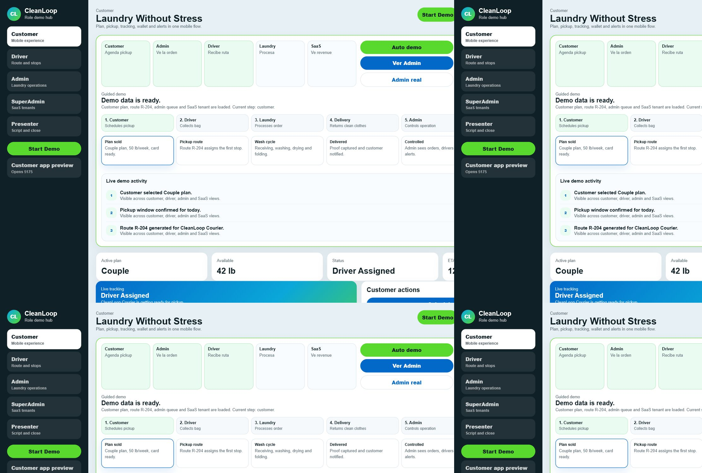
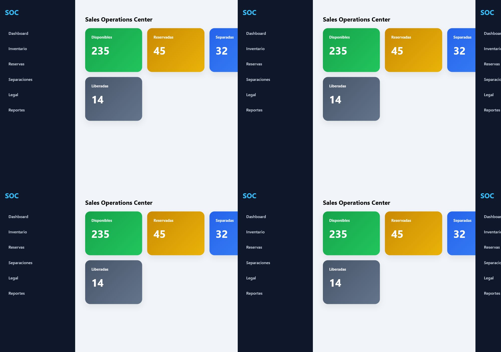
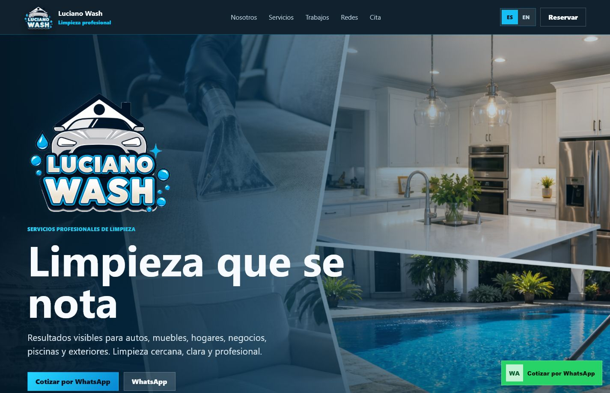
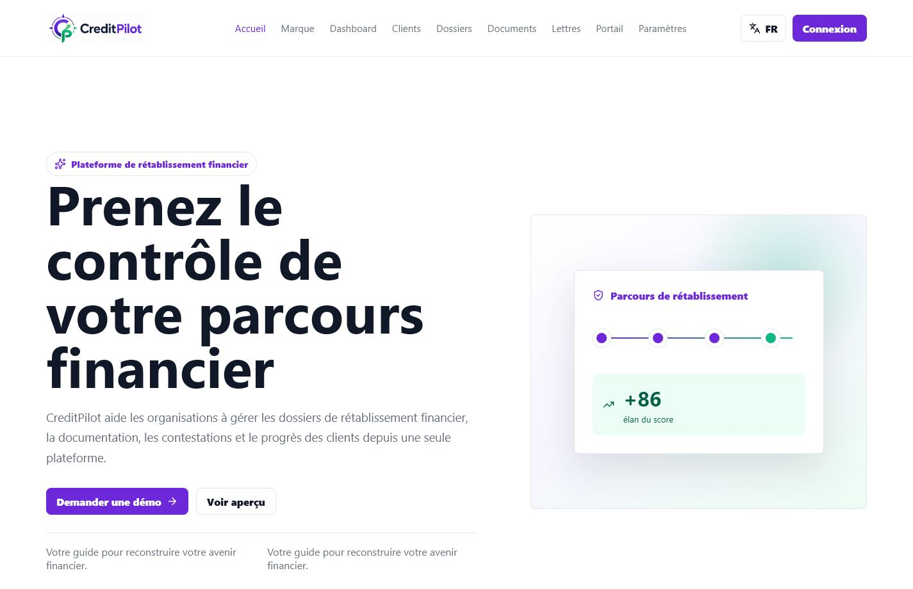

Catalogo, carrito y pedidos por WhatsApp.
YC Systems / Proyectos
Soluciones reales
6 soluciones reales construidas por YC Systems.
Una tienda online real, un CRM inmobiliario, un SaaS para lavanderias, un dashboard operativo, una web-app de limpieza profesional y una plataforma financiera en crecimiento.
Proyecto real
Capturas reales
Mantenimiento disponible
Repos verificados

Vitrina de soluciones
6 soluciones reales construidas por YC Systems.
La pagina muestra proyectos como productos comprables, no como una lista tecnica. El portafolio sigue creciendo con casos nuevos y mejor documentados.
Clientes, reservas, pagos y seguimiento.
Roles, apps moviles, admin, pagos y mapas.
Metricas, actividad comercial y visibilidad ejecutiva.
Limpieza profesional, reservas, WhatsApp, chat e idioma.
Clientes, casos, documentos, cartas, portal y compliance.
Casos profundos
Casos reales que muestran crecimiento.
Cada caso resume que se construyo, que problema resuelve y que puede contratar un cliente similar.

GhostWear
ProblemaUna marca streetwear necesitaba verse real, mostrar productos y recibir pedidos sin depender de mensajes sueltos.
SolucionTienda visual con categorias, carrito, catalogo, productos, experiencia movil y direccion de compra por WhatsApp.
ResultadoGhostWear ya funciona como tienda real para presentar drops, shorts, hoodies, medias y gorras con dominio activo.
Cliente similar puede comprarTienda online, catalogo, carrito, pedido por WhatsApp, mantenimiento y version ES / EN.
Quiero una tienda como esta
BrokerControl
ProblemaEquipos inmobiliarios pierden control cuando prospectos, reservas, pagos y documentos viven en hojas separadas.
SolucionCRM con dashboard, clientes, reservas, planes de pago, comisiones, tareas, reportes y flujo comercial.
ResultadoUn sistema demostrable para ordenar operaciones inmobiliarias y convertir seguimiento manual en control interno.
Cliente similar puede comprarCRM, panel admin, roles, reportes, automatizaciones, mantenimiento y nuevas funciones.
Quiero un sistema internoCleanLoop
ProblemaLavanderias que crecen necesitan coordinar pedidos, rutas, clientes, drivers, pagos y estados sin caos operativo.
SolucionPlataforma SaaS con API .NET, panel Blazor, apps Flutter, roles, Stripe, Google Maps y Firebase.
ResultadoDemo multi-rol que muestra como una lavanderia puede operar suscripciones, recogidas, entregas y revenue.
Cliente similar puede comprarSaaS MVP, API, app movil, admin, integraciones, pagos, mapas y mantenimiento mensual.
Quiero un SaaS
Sales Operations Center
ProblemaEquipos comerciales necesitan ver reservas, inventario, actividad y resultados sin esperar reportes manuales.
SolucionDashboard operativo para centralizar metricas, reservas, separaciones, actividad legal y seguimiento ejecutivo.
ResultadoUna vista clara para tomar decisiones, detectar pendientes y presentar estado comercial con mayor confianza.
Cliente similar puede comprarDashboard, reportes, metricas, panel ejecutivo, integraciones y mantenimiento.
Quiero un dashboard
LucianoWash
ProblemaUna empresa de limpieza profesional necesitaba presentar servicios, generar confianza y recibir solicitudes claras por WhatsApp.
SolucionWeb-app/PWA bilingue con servicios para autos, hogares y negocios, reserva, chat, cotizacion por WhatsApp y estructura lista para crecer.
ResultadoProyecto publico actualizado en junio 2026 con flujo comercial real, marca visible, servicios organizados y pendientes claros para produccion.
Cliente similar puede comprarPagina de servicios, PWA, reservas, chat, WhatsApp, galeria, multiidioma y mantenimiento mensual.
Quiero una web de servicios
CreditPilot
ProblemaOrganizaciones financieras necesitan manejar clientes, casos, documentos, cartas, seguimientos y actividad sin promesas riesgosas ni procesos dispersos.
SolucionPrototipo de plataforma con dashboard, clientes, casos, documentos, cartas, portal, roles, auditoria, compliance center y documentacion tecnica.
ResultadoRepositorio privado actualizado en junio 2026 con PRD, blueprint, data model, API design, roles, seguridad y roadmap por fases.
Cliente similar puede comprarSaaS MVP, plataforma operativa, portal de clientes, documentacion tecnica, backend, roles y mantenimiento por fases.
Quiero una plataformaSiguiente paso
Cual de estos proyectos se parece a lo que necesitas?
Elige una ruta y empezamos con una propuesta inicial.
Respaldo tecnico: repos, capturas, documentacion y roadmap disponibles segun el tipo de proyecto.Ver GitHub publico